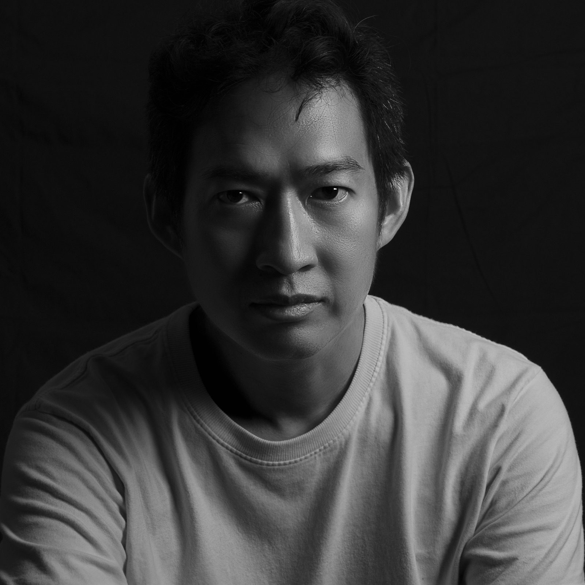

Danaya
Buntasnakul
ดนย บุญทัศนกุล
สีน้ำ หมึก และตัวอักษร — ภาษาจิตรกรรมที่ก่อรูปจากพิธีกรรม การสังเกต และการค้นหาความหมายอย่างแช่มช้า จิตรกร นักแสดงละครเวที นักร้องประสานเสียง และนักอ่านไพ่ทาโรต์

งานของเขาถักทอความรู้สึกจากเสียงเพลงสร้างเป็นภาพ ผสานกับภูมิทัศน์และสิ่งต่าง ๆ รอบตัว ละลายไปในเส้นหมึก เกิดเป็นภาษาจิตรกรรมที่เฉพาะตัวอย่างยิ่ง
ดนย บุญทัศนกุล ศิลปินจากกรุงเทพฯ ทำงานบนเส้นทางที่สีน้ำ หมึก และตัวอักษรพาดผ่านกัน จบปริญญาโทจากคณะวิจิตรศิลป์ มหาวิทยาลัยเชียงใหม่ และเคยศึกษาต่อที่ L'Accademia di Belle Arti di Firenze ประเทศอิตาลี
ตลอด 15 ปีกับนิทรรศการเดี่ยว 6 ครั้ง งานของเขาสำรวจความใกล้ชิด ความฝัน และรอยต่อเงียบงันของความเป็นมนุษย์ — ทุกสิ่งที่เขาทำต่างหล่อเลี้ยงภาษาในงานวาด
attention · listening · the slow search for meaning
การสังเกต · การฟัง · การค้นหาความหมายอย่างแช่มช้า
นิทรรศการเดี่ยว
นิทรรศการเดี่ยว 6 ครั้ง ตลอด 15 ปี
- 2022At The End You Must Wake UpFoxes International, Sky Bar & Lounge — Hua Hin
- 2022I Am Homeบ้านศิลปิน · Artist's House — Hua Hin
- 2010Untitled No. 1 ไม่มีชื่อลำดับที่หนึ่งร้านแจ่งเมือง Gallery & Frame — Chiang Mai
- 2009Missing LinkPridi Banomyong Institute — Bangkok
- 2008In the Name of Love ในนามของความรักหอศิลป์ บ้านศิลปิน — Hua Hin
- 2008Between Us ระหว่างเราPridi Banomyong Institute — Bangkok
- 2007Untitled No. 0 ไม่มีชื่อลำดับที่ศูนย์Amari Watergate Hotel — Bangkok
นิทรรศการกลุ่ม — คัดสรร
- 2011Master's Thesis Exhibition in PaintingCMU Art Museum, Chiang Mai
- 2011DiariesCMU Art Museum, Chiang Mai
- 2010Multicultural Art ExhibitionPridi Banomyong Institute, Bangkok
- 2010Faculty Exhibition '53Bon Gallery, Bangkok
- 2010Weather or Not?แมวใจดี Gallery, Chiang Mai
การศึกษา
- 2012ศิลปมหาบัณฑิต (จิตรกรรม)
Faculty of Fine Arts, Chiang Mai University - 2003ทุนระยะสั้น
L'Accademia di Belle Arti di Firenze, Italy - 2001ศิลปบัณฑิต (จิตรกรรม)
Srinakharinwirot University (มศว)
การสอนและสังกัด
- 2021–23อาจารย์พิเศษ วิทยาลัยการออกแบบ
Rangsit University - 2006–11อาจารย์ประจำ วิชาศิลปะพื้นฐาน
Dhurakij Pundit University - 2004–14สมาชิก
Hua Hin Artists Group - 2000–12สมาชิก
Suanplu Chorus
รางวัล — ประสานเสียงนานาชาติ
- 2012เหรียญเงิน ×2 — World Choir Games VI
Cincinnati, USA - 2010ผู้แทนวัฒนธรรมไทย
UNESCO Cultural Week, Paris - 2008เหรียญเงินและทองแดง — World Choir Games IV
Graz, Austria - 2006เหรียญทองแดง — World Choir Games III
Xiamen, China - 2004เหรียญเงิน — Choir Olympics
Bremen, Germany
งานการแสดง
- 2000–12Suanplu Chorus
การแสดงระดับนานาชาติ - 2007–18Anatta Theatre Company
บันทึกอิสรา · มังกรลัดเกล็ด · พระเจ้าช้างเผือก - ปัจจุบันนักแสดงและนักร้องอิสระ
นักอ่านไพ่ทาโรต์
มาสร้างสิ่งที่เงียบงันด้วยกัน